Auxiliar 19: Ley de Ampère — Parte 2
Esta sesión profundiza en la aplicación de la ley de Ampère a configuraciones de mayor complejidad: densidades de corriente no uniformes $J(r)$, corrientes superficiales $K$, solenoides concéntricos y cilindros con perforaciones. El hilo conductor es siempre el mismo: elegir un camino amperiano con la simetría del problema, calcular $I_\text{enc}$ con cuidado, y despejar $\vec{B}$.
Temas que cubre
- Corriente encerrada con densidad volumétrica no uniforme: $J(r) = J_0\!\left(1 - \tfrac{r}{R}\right)$
- Superposición de campos de una corriente plana (densidad lineal $K$) y un cilindro sólido
- Campo de un solenoide ideal: $B = \mu_0 n I$ dentro, nulo fuera
- Dos solenoides concéntricos: cancelación de campo para $r < R_2$ y fuerza por unidad de área sobre el solenoide interior
- Principio de superposición: cilindro con perforación cilíndrica tratado como cilindro completo menos cilindro de radio $b$
- Fuerza por unidad de largo sobre un alambre externo debida al campo del sistema cilindro-perforación
- Diferenciales en coordenadas cartesianas, cilíndricas y esféricas (repaso de formulario)
Conceptos clave
Densidad de corriente no uniforme
Cuando $J$ depende de $r$, la corriente encerrada se calcula integrando: $I_\text{enc} = \int_0^r J(r')\,2\pi r'\,dr'$. El resultado ya no es simplemente $J \cdot \pi r^2$; hay que resolver la integral explícitamente antes de aplicar Ampère.
Campo de un plano infinito de corriente
Una lámina plana e infinita con densidad lineal $K$ produce $B = \tfrac{\mu_0 K}{2}$ paralelo al plano y perpendicular a $\vec{K}$, con dirección opuesta a ambos lados. Se obtiene con un lazo rectangular amperiano.
Solenoide ideal
Para un solenoide muy largo de $n$ vueltas por unidad de largo y corriente $I$: $\vec{B} = \mu_0 n I\,\hat{z}$ en el interior y $\vec{B} = 0$ en el exterior. La demostración usa un camino amperiano rectangular que atraviesa la pared del solenoide.
Superposición para geometrías con huecos
Un cilindro con perforación descentrada se trata como la superposición de un cilindro completo de radio $R$ (con densidad $+J_0$) y un cilindro de radio $b$ (con densidad $-J_0$) que ocupa el hueco. Los campos individuales son uniformes; el campo neto en el hueco es constante y se puede sumar vectorialmente.
Fórmulas fundamentales



Qué hay que entender
- Cuando $J$ depende de $r$: no usar $I_\text{enc} = J \cdot A$. Integrar siempre $I_\text{enc}(r) = \int_0^r J(r')\,2\pi r'\,dr'$ antes de sustituir en la ley de Ampère.
- Superposición de fuentes: el campo total es la suma vectorial de los campos de cada fuente. Para el plano + cilindro, calcular $\vec{B}_\text{plano}$ y $\vec{B}_\text{cilindro}$ por separado y sumar en el punto $P$.
- Solenoides concéntricos: el campo de cada solenoide solo existe en su interior. Para $r < R_2$, ambos solenoides contribuyen; para $R_2 < r < R_1$, solo el exterior. Usar esta distinción para encontrar $I_2$ que anula $\vec{B}$ en $r < R_2$.
- Fuerza por unidad de área: usar el campo promedio entre interior y exterior ($\vec{B}_\text{avg}$) o directamente el campo externo que actúa sobre la corriente superficial $\vec{K}$ de la pared del solenoide.
- Perforación descentrada: los ejes de los dos cilindros ficticios no coinciden. Los campos se calculan con sus propios ejes; luego se suman vectorialmente en el punto de interés usando desplazamientos relativos.
- Fuerza por unidad de largo entre alambres paralelos: $dF/dL = \mu_0 I_1 I_2 / (2\pi d)$, atractiva si las corrientes son paralelas.